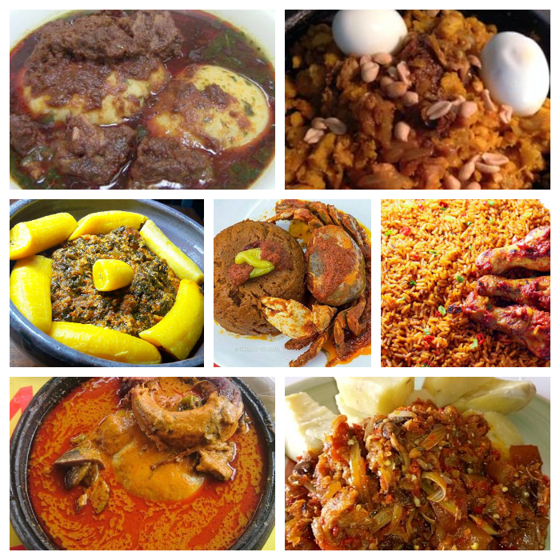
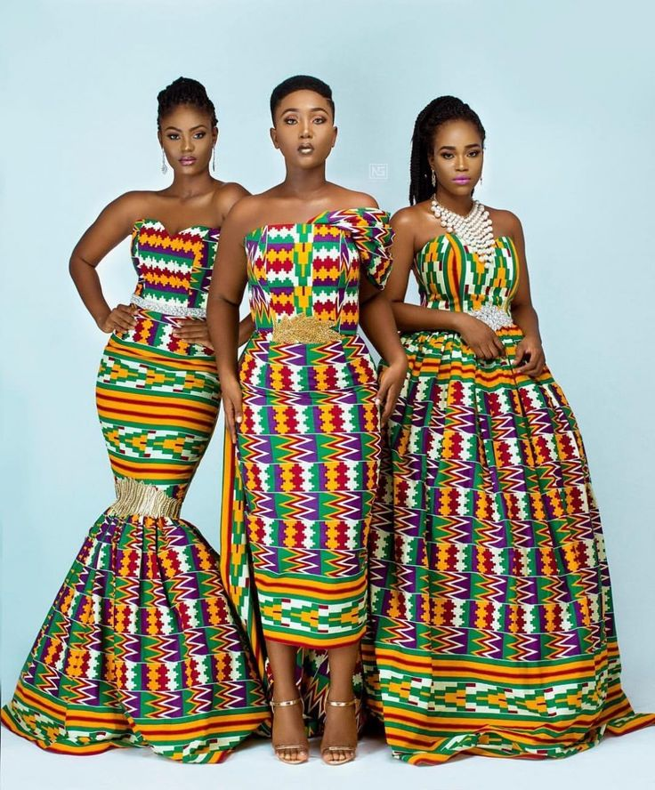

Food
Ghanaian cuisine is diverse and includes dishes such as jollof rice, banku, fufu, and waakye. These dishes are often served with stews or soups made with vegetables, meat, or fish.
Music
Ghanaian music is known for its highlife and hiplife genres. Highlife music originated in Ghana in the early 20th century and is characterized by its fusion of Western and African musical styles. Hiplife music emerged in the 1990s and is a fusion of highlife music and hip hop.
Dance
Ghanaian dance is an important part of the country's culture and includes traditional dances such as adowa, kpanlogo, and agbadza. These dances are often performed at festivals and other cultural events.
Fashion
Ghanaian fashion is known for its vibrant colors and bold patterns. Traditional Ghanaian clothing includes the kente cloth, which is made from interwoven strips of silk and cotton and is often worn on special occasions.
